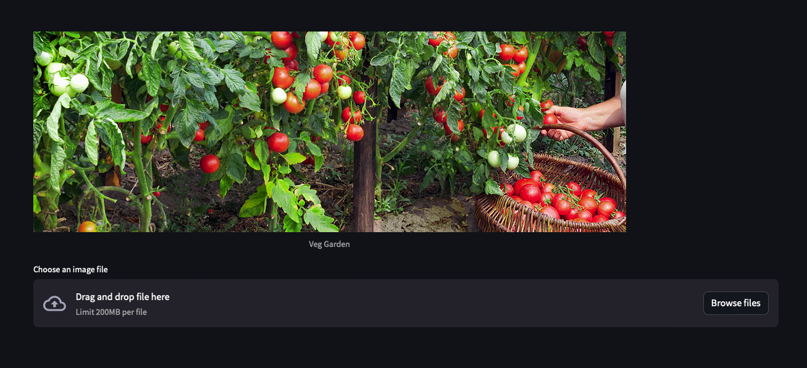
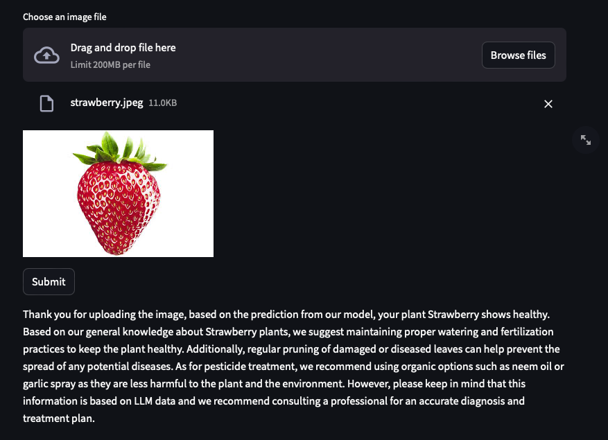

ML Group Project
Our project will develop an open-source web application that leverages advanced Convolutional Neural Networks to provide accurate and
efficient plant disease detection and diagnosis, facilitating agricultural productivity, and serving as an educational tool for technology and agriculture enthusiasts.
Our Web App

Our Team

Hi, I’m Chad and I’m originally from Kingston, Jamaica. I studied Mechanical Engineering as an undergrad at WPI and then transitioned to Data Science. I really like to watch soccer and Formula 1 - I’m an avid fan of both sports.
I would really like to see a live formula 1 event in the future.

Dan Fox is enrolled in a Master of Science in Data Science program at Worcester Polytechnic Institute and expects to get his degree in December 2024. He has 22 years of previous experience in software engineering development, focused largely on network-based embedded software.
He received his undergraduate degree from the Massachusetts Institute of Technology.

Ivan Lim is currently pursuing a PhD in Data Science in Worcester Polytechnic Institute. Specifically, he focuses on the growing prevalence of online learning platforms within the educational sector and teachers' use of these platforms.
His research aims to analyze teachers' digital pedagogy, utilizing digital footprints or log files from these platforms, to understand their impact on student learning outcomes.
Bijesh is an active-duty Army officer currently pursuing a PhD in Data Science, with a focus on AI applications in data visualization, specifically aimed at enhancing collaboration and decision-making. In his leisure time, he enjoys engaging in outdoor activities such as fishing, hunting, hiking, and kayaking, alongside tackling various home improvement projects.

Splinter - The mentor. Guides the team with wisdom and provides invaluable advice.
Motivation
Between 20% to 40% of global crop production is lost due to pests annually. Furthermore, plant diseases cost the global economy around $220 billion according to the Food and Agriculture Organization of the United Nations [1].
Research into the domain of plant disease detection using
computer vision capabilities has piqued the interest of
researchers from both the academic and industrial
sides alike. We are growing accustomed to having various
machine-learning applications that help us with difficult
tasks, such as plant disease identification with varied levels
of accuracy and usability.
Many disease prediction efforts rely solely on examining
images of plant leaves. However, there is an increasing
demand for not only classifying diseases but also plant
species. A multi dimensional classification solution would
be much more attractive, especially for large-scale crop
management.
This project is driven by
the potential of convolutional neural networks (CNNs) to
significantly advance the identification process of plant
ailments with a higher accuracy and efficiency that were
previously unattainable.
Our thesis explores advanced
disease identification methods in plants through an active
literature review and translating these techniques into a
practical, user-friendly tool. We aim to expand on an
existing researchers’ codebase to develop an open-source
web application that can serve both as a sophisticated
plant disease detection system and as an educational plat-
form for future developers and researchers in the field.
In this experiment, we make the following contributions:
- Tool Function: Our tool leverages ML and deep-
learning algorithms to accurately classify plant dis-
ease from images that can be used for diagnosis and
remediation suggestions.
-
Impact: Our tool will be a step forward in improv-
ing global agriculture efforts, informing hobbyists,
and inspiring aspiring researchers through access to
a web platform that can be used as a product or boil-
erplate code repository to develop the tool further.
Project Impact
The impact of this project lies in its ability to serve as a guide for future works. Future researchers can use this project as a reference and a starting point for their research.
A guide for plant disease classification can serve as an invaluable resource for a beginner in the field of machine learning by offering a comprehensive overview of both the practical application of machine learning techniques and the domain-specific challenges involved in diagnosing plant health. For novices, such a guide demystifies the process of applying machine learning algorithms to real-world problems, providing a concrete example of how data can be collected, processed, and used to make predictions or decisions—in this case, identifying various plant diseases based on symptoms presented in images or data sets.
Furthermore, it introduces beginners to the interdisciplinary nature of applied machine learning, blending computer science with botany and plant pathology, thereby broadening their understanding and appreciation of the field. By tackling a specific task like plant disease classification, beginners can gain hands-on experience with data preprocessing, feature extraction, model selection, and evaluation metrics, all of which are foundational skills in machine learning. Additionally, such a guide can highlight the importance of domain expertise in developing effective machine learning solutions, showing how collaboration between machine learning practitioners and subject matter experts can lead to more accurate and meaningful outcomes.
References:
-
UN Focus on Plant Health, Crucial for Boosting Food Security Worldwide | UN News. 12 May 2022, https://news.un.org/en/story/2022/05/1118102.
Background
[4] reviewed current deep learning methods for
identifying plant species and detecting diseases from leaf images.
Their review highlighted four key strategies:

Multi-Model
They constructed a dual-model ensemble comprising two convolutional neural networks (CNNs). One model focused on identifying plant species from leaf images, while the other was dedicated to disease prediction. To ensure a comprehensive analysis, the researchers employed various backbone CNN architectures for this approach, which included their custom model as well as established models like AlexNet, VGG16, ResNet101, EfficientNet, InceptionV3, and MobileNetV2.
Multi-Label
They also created a single CNN architecture designed to output multiple ps. Additionally, this framework diverged from conventional multi-p learning methods mentioned in [5]. They combined these ps to form a power-set p for predictions. Essentially, utilized a unified p to represent multiple ps simultaneously. Additionally, they leveraged various backbone CNN architectures to support this methodology.
Multi-Output
The researchers also created a single CNN model, similar to the
multi-p strategy. However, it differs by having
separate output layers for each classification target.
Multi-Task
Adopt a multi-task learning framework that targets
different objectives using data from the same dataset.
Building on these methods, the authors introduced a novel
technique named Generalised Stacking Multi-output CNNs (GSMo-CNN).
This method combines some strengths of the aforementioned
approaches to enhance performance by creating a sequence of output
layers. This sequential structure forms a hierarchical
classification system aimed at accurately representing the
relationship between various plant species and their diseases
during analysis.
Furthermore, the study explored the effectiveness of
different CNN architectures (e.g., AlexNet, VGG16, InceptionV3)
across all four strategies by testing them on three well-known
plant disease image datasets:
-
Plant Village [2]
-
Plant Leaves [1] and,
-
Plant Doc [3]
InceptionV3 emerged as the superior CNN architecture
for identifying plant species and predicting diseases.
References:
- S. S. Chouhan. A Database of Leaf Images: Prac-
tice towards Plant Conservation with Plant Pathology,
June 2019.
- D. P. Hughes and M. Salathe. An open access repos-
itory of images on plant health to enable the de-
velopment of mobile disease diagnostics, Apr. 2016.
arXiv:1511.08060 [cs].
- D. Singh, N. Jain, P. Jain, P. Kayal, S. Kumawat, and
N. Batra. PlantDoc: A Dataset for Visual Plant Dis-
ease Detection. In Proceedings of the 7th ACM IKDD
CoDS and 25th COMAD, pages 249–253, Hyderabad
India, Jan. 2020. ACM.
- J. Yao, S. N. Tran, S. Garg, and S. Sawyer. Deep
learning for plant identification and disease classifica-
tion from leaf images: Multi-prediction approaches.
ACM Comput. Surv., jan 2024. Just Accepted.
Page 3
-
Gjorgji M, Dragi K, Dejan G, and Sašo D. 2012. An extensive experimental comparison of methods for multi-p learning. Pattern Recognition 45, 9 (2012), 3084–3104. DOI:https://doi.org/10.1016/j.patcog. 2012.03.004 Best Papers of Iberian Conference on Pattern Recognition and Image Analysis (IbPRIA’2011).
Existing Technologies
There are several commercially available apps
that can identify infected plants. Some of these apps include:
PlantSaver - Plants Identifier
This app allows the user to identify the plants in front of them, determine the ideal watering schedule for the plants and provide some disease diagnosis.
Agrio: Plant Health App
This app allows farmers and gardens to remotely monitor, identify and treat plant diseases in the field. The app offers a personalized experience by tailoring plant disease diagnostics and treatment plans to specific to an individual's needs.
Plant Disease Identifier
This app allows the user to take a picture of a plant and through computer vision, the app determines of the plant is infected ir not.
All apps are all available on the Apple App Store.
Each app allows the user to take a picture of a plant,
and the app will determine whether or not the plant is
healthy. It is important to note that each app requires
a monthly subscription for uninterrupted usage.
Additionally, “Agrio” is the only service that offers
a web-based application, which requires a monthly
subscription.
Our Contribution
For this project, this team developed a
free-to-use guide for beginners to the field of
Machine Learning who want to create their own Plant Disease
Classifier. This team will outline the steps involved,
including preprocessing techniques, model architectures, and evaluation metrics needed to create a robust model.
Experimentation
Our team performed several experiemnts in an effort to improve on the authors' GSMo-CNN model. These efforts included:
adding additional hidden layers and tuning several hyperparaeters.
Tutorials
We have developed tutorials tailored to individuals with varying levels of proficiency in deep learning, ranging from novice to expert. These tutorials serve as a comprehensive, step-by-step guide for executing the original authors’ code, augmented with our own additions, to train a model and generate predictions. It is meticulously crafted to accommodate those with minimal experience in the operational aspects of deep learning.
Engaging directly with the source code is irreplaceable in gaining a thorough understanding of the intricacies involved. Through customization of global parameters, such as model selection, dataset choice, batch size, epoch count, and iterations for performance metric consolidation via averaging, participants can glean invaluable insights into the conceptual and algorithmic foundations of deep learning.
We cordially invite our readers to delve into the source code, notably 'train_models.py,' and acquaint themselves with the diverse architectural nuances. Additionally, readily available resources via web search or consultation with generative AI can clearly explain the functionalities of various layers and methods.
Furthermore, we advocate for experimentation with different global variables to observe how model performance is affected by alterations in these hyperparameters. The enigmatic nature of deep learning algorithms often yields fascinating results, underscoring their efficacy despite their inherent complexity.
We believe that our readers will find the exploration of deep learning principles as captivating as we do, and we encourage thier active participation in this endeavor.
Web Application
As part of our free to use guide, our team developed a web application that will allow users to quickly classify plant species and diseases. Our team decided to also include a standalone Machine Learning
product in which our readers can showcase the results of their model in a visually pleasing way.
Our app allows a user to upload a picture of a plant. Then, the app will determine the plant's species and health, and will give some useful information on proper care and maintenance.
Here's A Prediction

Please note that the app makes an API call to OpenAI's Large Languae Model (LLM) in order to generate the additional
information on care and maintenance. If the users of our do not have an API key, the app will only classify the plant species and disease.
results and Discussion
This section outlines the timeline of our project...
Tutorials and How to guide
This section provides more detailed information about our project...
Conclusions and Reflections
On completing this project, we have created a free to use guide for new comers to the field of Machine Learning
to develop a Plant Species and Disease classification model. As part of this endeaver, we created tutorials and a standalone web application.
With our project as a guide, our readers will not only have framework to build their own models, but they will also have a means of showcasing their work.
AI has completely revolutionalized the field of plant pathogy, and expensive research is constantly being conducted.
We believe that this project can serve as a stepping stone for future endeavers.